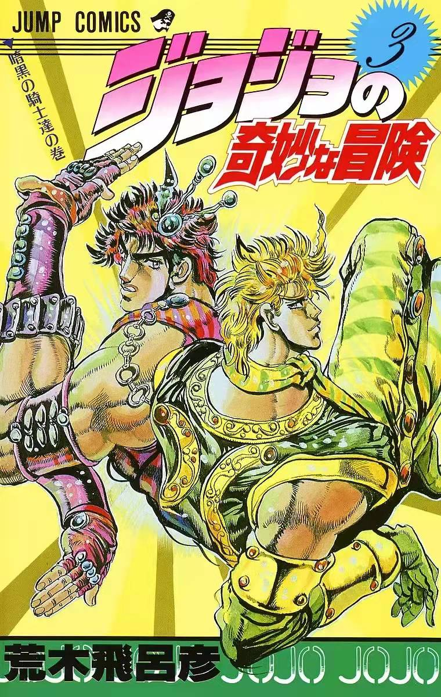
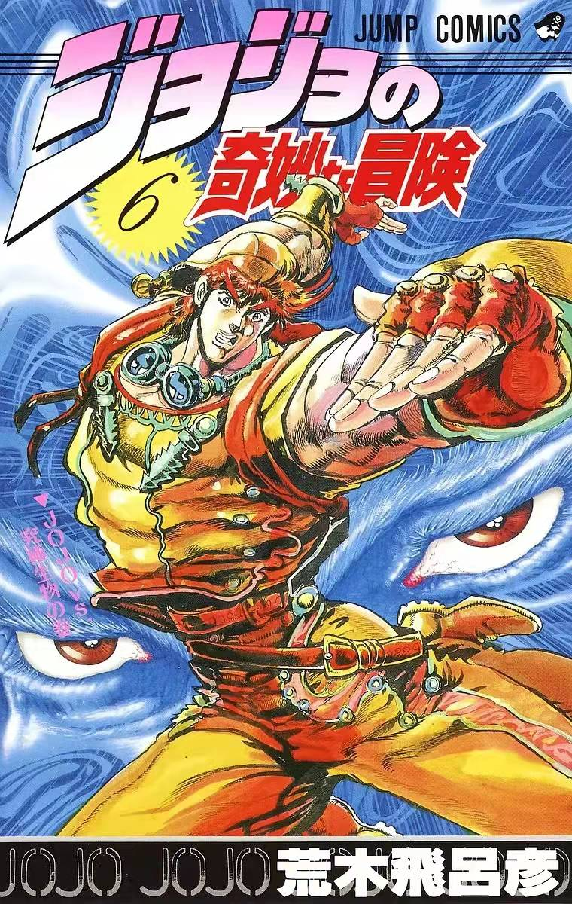
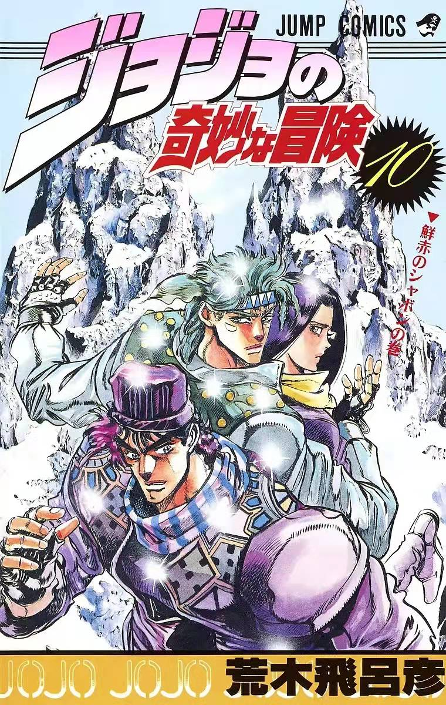
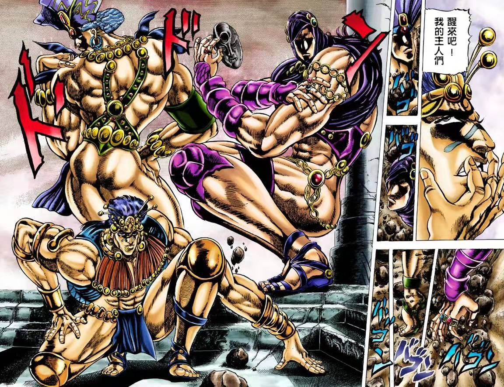

JOJO：乔纳森·乔斯达（初代JOJO）BOSS:迪奥·布兰度DIO
JOJO：乔纳森·乔斯达（初代JOJO）BOSS:迪奥·布兰度DIO
在古代墨西哥繁盛一时的太阳的子民阿兹特克，他们流传着一枚奇妙的「石鬼面」。 那是一枚奇迹的面具，能让人拥有一种力量，能获得永远的生命并成为真正的掌控者。然而从某个时候开始，就从历史中消失了踪影。 时光飞逝，来到了19世纪后叶。在这个人们的思想与生活产生激烈变化的时代，乔纳森·乔斯达与迪奥·布兰度相遇。二人一同渡过了少年时代到青年时代， 最后因为「石鬼面」，而步上了奇特怪异的命运。




JOJO：乔瑟夫·乔斯达 BOSS: 柱之男：卡兹
乔纳森去世49年后，随着时光流逝，时代也发生了变迁，成为了石油大亨的史比特瓦根设立了自己的财团， 史特雷则代替多配地师父成为了波纹使者一族的继承人。就在这时，史比特瓦根财团所派出的遗迹发掘队， 在墨西哥的一个遗迹中发现了一具奇妙的木乃伊。而在那具木乃伊的旁边，却雕刻着不祥阴森的石鬼面浮雕…… 乔斯达家族与石鬼面之间的因缘还没有结束……